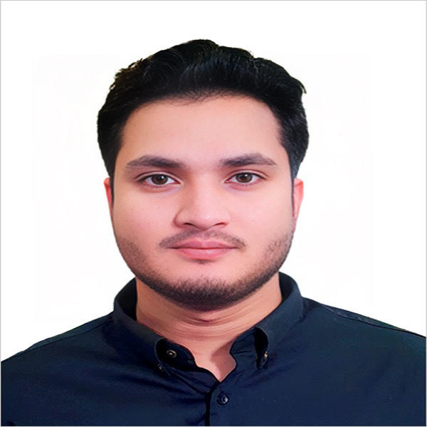

A small, hands-on team — every bid, PCR, and portal update is handled by someone who has actually done the work themselves, not routed through a rotating pool of junior staff.

Processing property preservation work orders since 2020. Founded Feuern Outsourcing in 2022 after running back-office operations for US-based preservation and tech accounts — bid writing, portal processing, and team training across Safeguard, MCS, Zephyr, Xome, and more.
"I don't treat a work order as just a task to close out — I treat it like it's my own property. Whatever the vendor or client would want done, I make sure that happens, just through the portal instead of in person."
LinkedInA steady, trusted presence on the team — dependable, well-organized, and always reachable. Ismail handles client messages and questions directly and consistently, keeping communication responsive so nothing sits waiting on the client's end.
LinkedInQuiet and consistent, Fazlea takes on some of the largest and most demanding orders without complaint. His patience and steady output make him the one the team leans on for high-volume work — the kind of contribution that's easy to overlook until you've worked alongside him.
LinkedIn